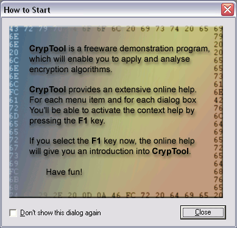

The default settings for certain options used in CrypTool which are to outlast a single session are saved in the Windows registry.
If you start CrypTool for the first time, the dialog How to start appears. If you don't want to see this dialog in the future, you can use the check box Don't show this dialog again. This way the registry variable NoTipps is set to zero, and the dialog is not shown anymore when CrypTool is started.

Below it is shown how you can access the Windows registry, and the various CrypTool options are explained.
Access to the Windows registry
Please note: The windows registry contains critical data. Alteration can lead to instabilites of the operating system or the applications.
You can use the DOS command regedit.exe to access the Windows registry. To get to the CrypTool settings, use the following path:
HKEY_CURRENT_USER\Software\CrypTool\Settings
You can find the aforementioned registry variable NoTipps under Options\StartingOptions. You can change the value of this variable using the right mouse button (reasonable values are 1 and 0 only, for showing and not showing the dialog, respectively).
In the following, the registry values used by CrypTool are listed as well as their default settings and their range of values:OrdChrOffset (0 or 1, default = 0):
PaddingDefaultChr (0 or 1, default = 1):
PaddingOwnChr (an ASCII character, considered only if PaddingDefaultChr = 1):
Uses the user-defined alphabet character for padding the Hill cleartext before the encryption.
EditKeyChrMatrix (0 or 1, default = 1):
2. Diffie-Hellman Key Exchange Protocol
ShowIntro (0 or 1, default = 1):
ShowInfo (0 or 1, default = 1):
3. Attack on the hash value of the digital signature
HashAlgorithmID (0 to 5, default = 0):
SignificantBitLength (1 to bit length of the selected hash function):
Number of bits in different documents that need to match after a collision search.
ModificationMethod (0 or 1, default = 1):
ModifyBlankEOL (0 or 1, default = 1, relevant only if ModificationMethod = 0):
ModifyDoubleBlank (0 or 1, default = 1, relevant only if ModificationMethod = 0):
ModifyCharSet (0 or 1, default = 0, relevant only if ModificationMethod = 1):
HarmlessFile (path, default = %cryptool%\original.txt):
Path of the harmless file.
DangerousFile (path, default = %cryptool%\fake.txt):
Path of the vicious file.
PerformTestRun (0 or 1, default = 0, only changeable in the registry):
If test runs are to be executed, the following variables are relevant:
MinimumLength (Number, default = 8): Minimum password length.
MinimumDigits (Number, default = 1): Minimum number of digits in the password.
MinimumSpecial (Number, default = 1): Minimum number of special characters in the password.
SpecialGroup (String, default = ^°!"§$%&/()=?´`\<>|,;:.-_#'+*~@): Special character set.
5. Generation of Random Numbers
GenerateBytes (Number, default = 2500): Length of the random output in byte.
ShowInternalRandState (0 or 1, default = 0):
RandSeed (String, default = 314159): Seed for initializing the number generators.
SelGenerator (Number between 0 and 3, default = 0):
Paramaters of the pseudorandom number generators
6. Secret Sharing Demonstration
ShowIntro (0 or 1, default = 1):
7. Side-channel attack against "Textbook-RSA"
BitlengthSecret (Number, default = 128): Bit length of the RSA-encrypted secret.
Keyword (String, default = Alice): Keyword used to recognize successful decryptions.
ShowPermutationKey (0 or 1, default = 1):
ShowIntro (0 or 1, default = 1):
ShowIntro (0 or 1, default = 1):
NoTipps (0 or 1, default = 1):
SampleTextFile (0 or 1, default = 1):